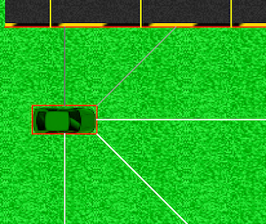

The lines in question.
A car can be represented as a physical body with a vector, whose driver can control both direction and magnitude. It also includes cameras and can be associated with a driver to form an individual.
The physical body of a car is a rectangle that surrounds it. It is visible in red when the Hitbox option is activated, as shown in the image below.
It is not possible to directly control the position of the car. Instead, we control its velocity vector. Thus, we can change the angle, accelerate, or brake. The car's speed is continuously given to the individual's neural network.
To drive the car, the individuals must also see what is in front of them. For this purpose, the car is equipped with 5 "cameras," which are the segments represented in the image below. There are two lateral, two frontal oblique, and one frontal camera.
What the neural network receives from each of these sensors is a distance value corresponding to the length of the segment. A obstructed camera will give a value of 1, while a camera that sees far ahead will give a value of 0. The maximum vision distance of a camera is two tiles.

The cameras of a car. The physical body is also visible.
Within the Genetic Evolution tab, cars are associated with a neural network to form individuals. Each individual sees the values of the cameras and its speed, and chooses how to drive the car. Each time a reward line is crossed, it gains a point. If it touches the edge of the track, its car stops at that point. It will then reproduce based on its score, as explained in the part of the guide about the Genetic Algorithm.
They are visible as red lines when the Hitbox option is activated. If a car touches one, it has lost.
They are visible as yellow lines when the Hitbox option is activated. If a car touches one, it gains a point.
The lines in question.
In addition to the personal tracks list, it is possible to import/export them in the form of .gameGrid files. The tracks are then represented in text form, in the format name:typeOfTile(rotation|X|Y); where X and Y can be sets of tiles.